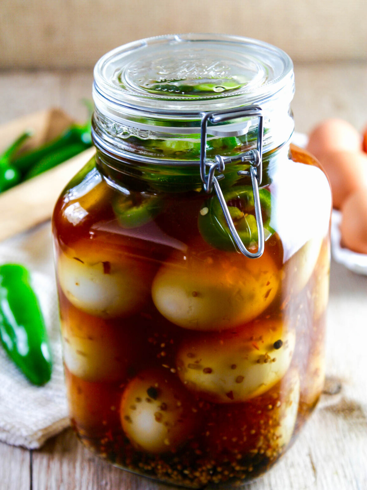
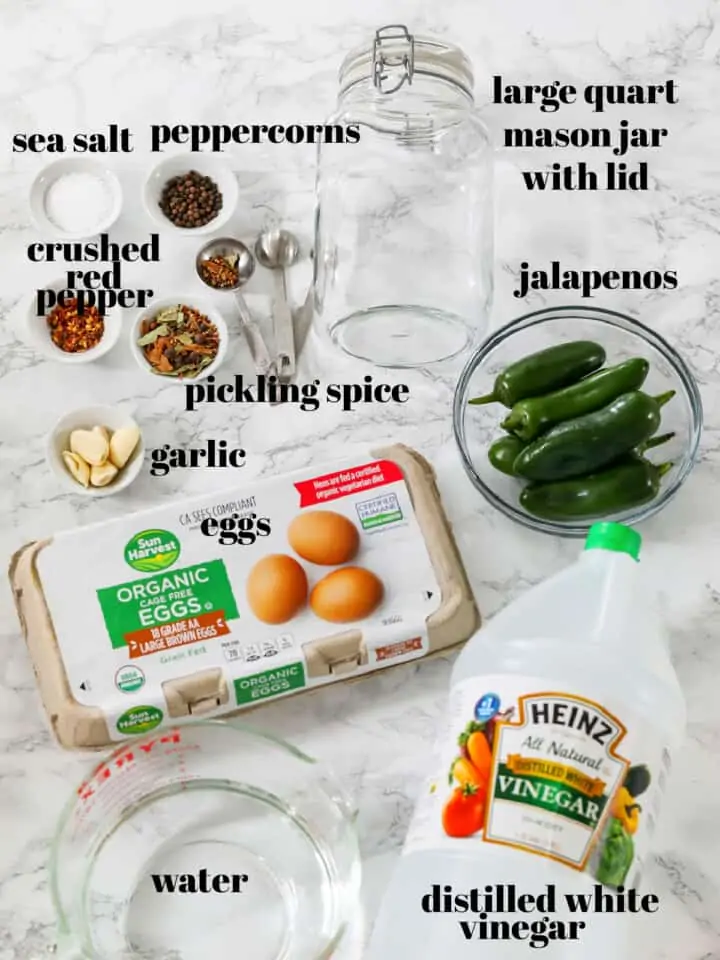
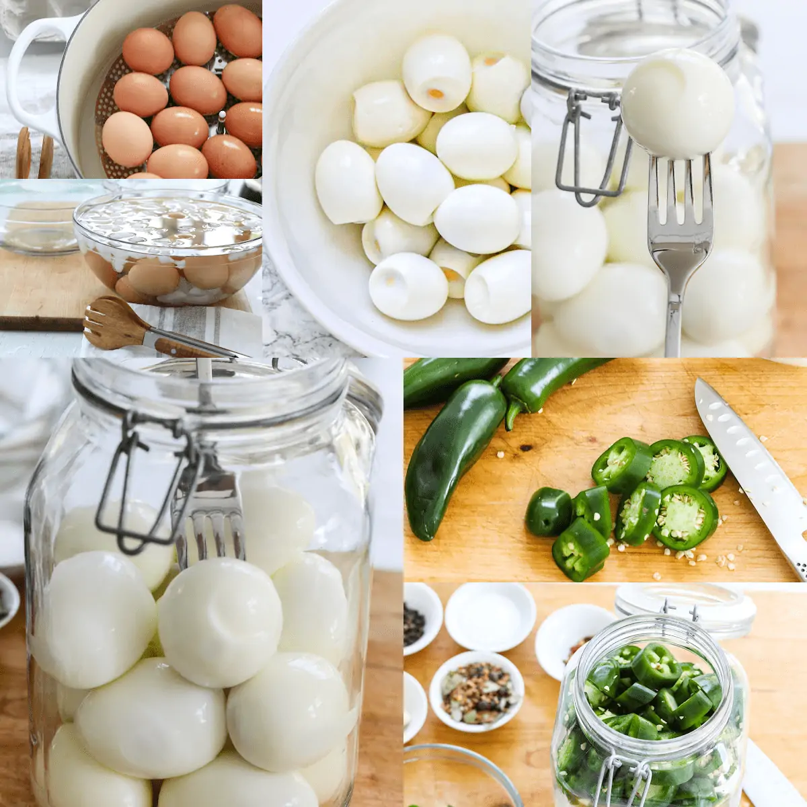

Pickled Eggs

Kyle's stolen pickeled egg recipe
This is a recipe that has been in my family for one generation (this generation). I just stole it from another webpage this morning. I have never made this recipe so let me know if it's good or not.
Ingredients

- 12-18 hard boiled eggs
- 4 cups distilled white vinegar
- 4 cups cold water
- 1 tablespoon sea salt
- 2 tablespoons peppercorns
- 2 tablespoons spice
- 1 teaspoon crushed pepper
- 6 garlic cloves (add extra if you wish or don't idgaf)
- 5 jalapenos (1/4" slices)
Steps

- The method I like the best is to "steam boil" eggs. 🥚🍳 Add water to a large pan with a lid, bring the water to a boil, and set a steamer basket in the water. Carefully add eggs to the steamer basket, cover, and let steam at high heat for 12 minutes. Fill a large bowl with ice and water.
- Remove eggs to ice bath for 15 minutes, roll crack on the board and the peel will slip RIGHT OFF! I love making eggs this way.
- Push a clean stainless fork into each egg, this helps brine get into the eggs. (Don't use any wooden items like toothpicks-it can be non-food-safe when pickling). Place all 12-18 eggs in a large clear and clean clamp jar.
- Next, slice the fresh jalapenos into ¼" slices, and set them on top of the boiled eggs in your jar.
Back